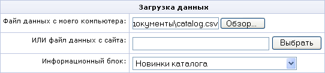
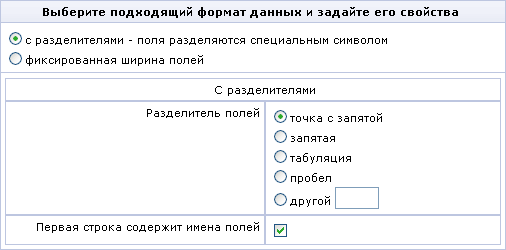

Загрузка каталога из CSV файла
Каталоги сайта могут заполняться и изменяться с помощью загрузки данных из файлов формата CSV (например, создаваемых в MS Excel). Для загрузки данных предназначена форма Import CSV (new) административного раздела сайта.
Так как файлы в формате CSV не содержат информации о самом каталоге и свойствах товаров внутри него, то перед загрузкой данных необходимо выполнить следующие действия.
- Создайте и настройте информационный блок (если каталог ещё не создан).
- Создайте в информационном блоке все необходимые свойства.
- Сделайте информационный блок каталогом (см. Торговый каталог).
- Выгрузите картинки товаров, если они есть, на сайт.
Для загрузки каталога из CSV файла выполните следующие действия.
- Откройте форму Import CSV (new): Магазин -> Торговый каталог -> Настройки импорта -> Импортировать (либо Добавить профиль).
- Если CSV файл с данными находится на локальном диске, выберите его с помощью кнопки "Обзор" в поле ввода Файл данных с моего компьютера. Если файл данных имеет большой размер и находится на вашем локальном компьютере, то рекомендуется сначала выкачать этот файл на сайт с помощью любого FTP-клиента.
Если файл с данными находится на сайте, откройте его с помощью кнопки "Выбрать" и убедитесь, что полный путь к нему попал в поле Файл данных с сайта.

- Выберите информационный блок, в который вы хотите загрузить данные.
- Для перехода к следующему шагу нажмите кнопку "Далее".

- Выберите подходящий формат CSV файла с данными:
- с разделителями - поля разделяются специальным символом (например, запятой или пробелом);
- фиксированная ширина полей.
В зависимости от вашего выбора необходимо заполнить соответствующую форму настроек.
- Если вы выбрали формат с разделителями, то укажите в поле Разделитель полей соответствующий разделитель. Если вы выбрали формат с фиксированной шириной полей, то укажите в поле Метки разделителя номера колонок, которые разделяют поля.
- Укажите, содержит ли первая строка файла имена полей или сразу идут данные.
- Нажмите на кнопку "Далее" для перехода к третьему шагу.
- Задайте соответствие полей в файле полям в базе. Для каждого поля из файла данных выберите соответствующее поле базы данных.
Если поле является элементом каталогизации, то установите ему в соответствие значение Группа уровня X.
- Обязательно должно быть установлено хотя бы одно из значений Уникальный идентификатор (B_IBLOCK_ELEMENT.XML_ID) или Название (B_IBLOCK_ELEMENT.NAME). Эти поля используются для сопоставления товаров в файле товарам в базе данных.
Внимание! Убедитесь, что соответствия полей заданы корректно. В противном случае результат загрузки непредсказуем.
- Для загрузки товаров с картинками необходимо предварительно выгрузить картинки в какой-либо каталог на сайте с помощью любого FTP-клиента.
Задайте в поле Путь к картинкам путь к каталогу на сайте, в который вы выгрузили картинки.
- Укажите, как поступать с теми товарами, которые есть в базе, но которых нет в CSV файле. Вы можете деактивировать (по умолчанию) или удалить такие товары, а так же оставить их без изменения.
- Для начала загрузки нажмите кнопку "Загрузить" либо "Сохранить" (если вы создавали новый профиль).